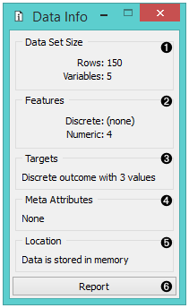
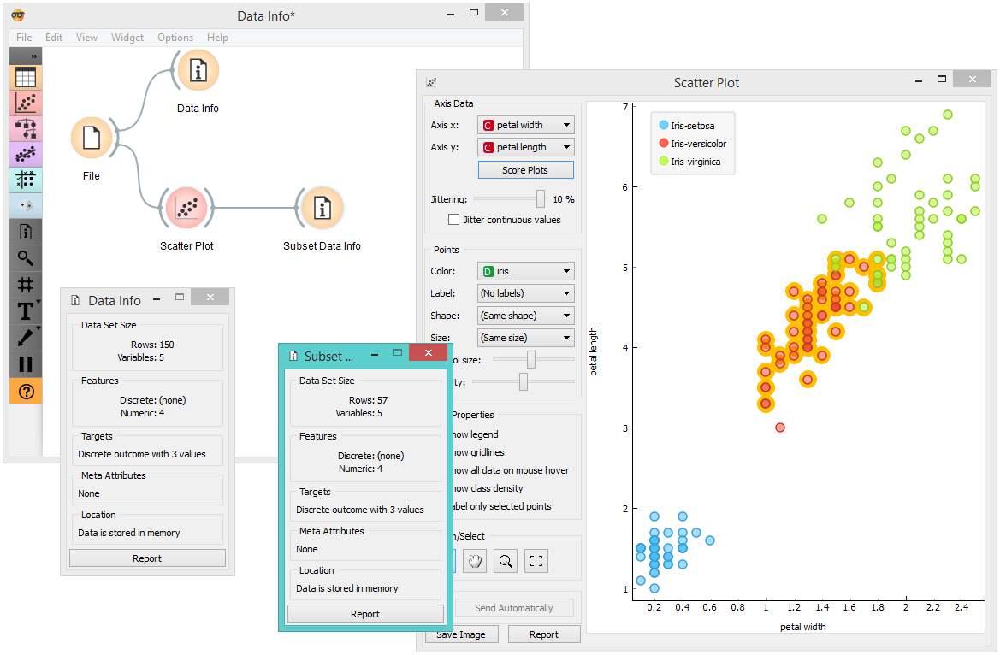

Data Info
Displays information on a selected dataset.
Inputs
- Data: input dataset
A simple widget that presents information on dataset size, features, targets, meta attributes, and location.

- Information on dataset size
- Information on discrete and continuous features
- Information on targets
- Information on meta attributes
- Information on where the data is stored
- Produce a report.
Example
Below, we compare the basic statistics of two Data Info widgets - one with information on the entire dataset and the other with information on the (manually) selected subset from the Scatter Plot widget. We used the Iris dataset.
